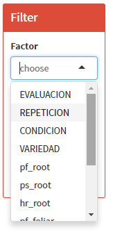

1 Import data
Una vez colectado los datos, de acuerdo a lo diseñado en FieldBook Plan deberá de ser importado a FieldBooQ como url, pegando el link de la hoja de google spreadsheed.
Importar Datos desde google
ó como una hoja de *.xlsx desde tu ordenador, considerar en Sheet el numero de hoja del libre que debe leer, si es la primera hoja es 1, si es la segunda es 2, etc.

Importar datos desde el ordenador
Una vez cargado el archivo. En ocasiones es muy útil realizar un filtro a la base de datos, para un análisis de solo algunos subniveles. Entonces en la herramienta Filter podrás seleccionar de la tabla importada los datos que se deseen procesar.

Importar datos, Filtro
De no escoger ningun filtro, se procesará la base de datos completa.